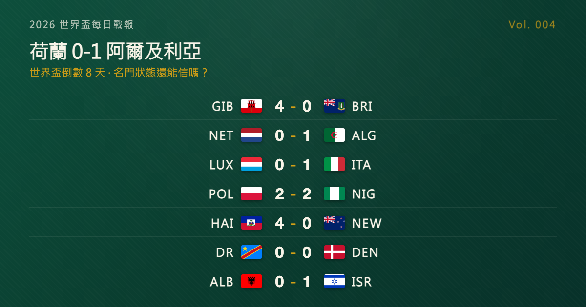

世界盃倒數 8 天：荷蘭被阿爾及利亞絕殺，名門狀態還能信嗎？

2026 世界盃每日戰報 Vol. 004
§1 即時比分戰報（6/3 國際熱身賽窗口）
| 賽事 | 比分 | 場館 | 焦點 |
|---|---|---|---|
| 🇳🇱 荷蘭 — 🇩🇿 阿爾及利亞 | 0 - 1 | 鹿特丹 De Kuip | 哈吉·穆薩 86' 客場絕殺 |
| 🇮🇹 義大利 — 🇱🇺 盧森堡 | 1 - 0 | 盧森堡市 Stade de Luxembourg | 埃斯波西托 49' 頭槌（國際米蘭新秀） |
| 🇵🇱 波蘭 — 🇳🇬 奈及利亞 | 2 - 2 | 華沙 PGE Narodowy | 莫菲 23'、波圖斯基 46'、奧努阿楚 77'(P)、維什涅夫斯基 90+5' 絕平 |
| 🇭🇹 海地 — 🇳🇿 紐西蘭 | 4 - 0 | Fort Lauderdale Chase Stadium | 普羅維登斯 12'、喬瑟夫 51'、皮埃羅 62'、拉克瓦 87' |
| 🇬🇮 直布羅陀 — 🇻🇬 英屬維京群島 | 4 - 0 | Europa Point Stadium | 斯坎隆 31'+64' 梅開二度、梅森 40' 進球、對方 11'(OG) |
| 🇨🇩 剛果（金） — 🇩🇰 丹麥 | 0 - 0 | 列日 Stade de Sclessin | 互有威脅、握手言和 |
| 🇦🇱 阿爾巴尼亞 — 🇮🇱 以色列 | 0 - 1 | 地拉那 Air Albania Stadium | 格盧赫 73' 唯一進球 |
7 場熱身賽橫跨歐洲與北美洲。最受關注的是荷蘭主場 0-1 不敵阿爾及利亞——名門在世界盃前 8 天交了一張不好看的成績單，86 分鐘哈吉·穆薩（Anis Hadj Moussa）一腳遠射破門客場絕殺。義大利、海地、直布羅陀同日獲勝；波蘭與奈及利亞 2-2 互拚，雙方各有絕殺與絕平；剛果民主共和國與丹麥踢和 0-0；阿爾巴尼亞主場小負以色列。
§2 排行榜：FIFA 最新排名亮點（2026 年 4 月版）
倒數期的排行榜看點不在積分（會內賽還沒開打），而在 FIFA 世界排名與各隊的熱身狀態。
- 🇳🇱 荷蘭：世界第 7。本場主場 0-1 不敵 FIFA 第 28 的阿爾及利亞，世界盃前 8 天交出不好看的成績單。
- 🇩🇿 阿爾及利亞：世界第 28。2014 巴西世界盃 16 強後，2018、2022 兩屆均缺席會內賽，2026 透過非洲區資格賽窗口擠進來。本場客場絕殺一支 FIFA 第 7 的歐洲名門，讓「阿爾及利亞值得在小組賽窗口被關注」這個論點變得可信很多。
- 🇮🇹 義大利雖未晉級 2026 世界盃，本場靠國際米蘭新秀皮奧·埃斯波西托（Pio Esposito）下半場頭槌取下盧森堡，新一代鋒線在接棒。
- 🔥 戲劇性比分：波蘭 2-2 奈及利亞（補時 90+5' 維什涅夫斯基世界波絕平）、海地 4-0 紐西蘭（C 組 — 同組巴西、蘇格蘭、摩洛哥 — 出線熱身找回火力）。
名單面：FIFA 各會員協會的 26 人最終名單已 6/2 統一公開（詳見 Vol. 002），進入「首戰前 24 小時可因傷替補」的微調期。
§3 賽事摘要
🇳🇱 荷蘭 0 - 1 阿爾及利亞 @ De Kuip, Rotterdam：第 86 分鐘哈吉·穆薩遠射破門，阿爾及利亞客場絕殺荷蘭。這是荷蘭出征前最後一場主場送行熱身賽，全場控球與射門占優卻被一擊定生死。詳見 §4。
🇮🇹 義大利 1 - 0 盧森堡 @ Stade de Luxembourg：國際米蘭新秀埃斯波西托 49 分鐘頭槌建功。義大利雖未晉級 2026 世界盃，但本場展示出新一代鋒線的接棒苗頭。
🇵🇱 波蘭 2 - 2 奈及利亞 @ PGE Narodowy, Warsaw：奈及利亞 23 分鐘莫菲（Terem Moffi）先進，波蘭 46 分鐘波圖斯基（Kacper Potulski）扳平；77 分鐘奧努阿楚（Paul Onuachu）點球再下一城；補時第 90+5 分鐘維什涅夫斯基（Przemysław Wiśniewski）世界波扳平 2-2。雙方各有絕殺與絕平，戲劇感十足。
🇭🇹 海地 4 - 0 紐西蘭 @ Chase Stadium, Fort Lauderdale：普羅維登斯（Ruben Providence）12 分鐘破門，喬瑟夫（Lenny Joseph）51 分鐘、皮埃羅（Frantzdy Pierrot）62 分鐘、拉克瓦（Duke Lacroix）87 分鐘接力進球。海地多點開花，世界盃 C 組（同組巴西、蘇格蘭、摩洛哥）出線之路前先在熱身賽找回火力。
🇬🇮 直布羅陀 4 - 0 英屬維京群島 @ Europa Point Stadium：本日最懸殊比分。直布羅陀主場斯坎隆（James Scanlon）梅開二度（31'、64'），梅森（Leon Mason）40 分鐘也有進球，加上對方 11 分鐘自擺烏龍。對直布羅陀來說這是國家隊史罕見的 4 球大勝，但對手 FIFA 排名約 200 名外，份量需打折扣。
🇨🇩 剛果（金）0 - 0 丹麥 @ Stade de Sclessin, Liège：雙方控制力均衡、互有威脅但都沒能轉化進球。對非洲球隊剛果（金）來說，與北歐勁旅丹麥踢和 0 分是一張不錯的熱身對帳單；丹麥則沒能在世界盃資格賽窗口外找到攻守節奏。
🇦🇱 阿爾巴尼亞 0 - 1 以色列 @ Air Albania Stadium, Tirana：以色列前鋒格盧赫（Oscar Gloukh）73 分鐘打入全場唯一進球。
§4 焦點分析：荷蘭被阿爾及利亞絕殺，名門狀態還能信嗎？
世界盃開幕前 8 天，名門在自家踢輸非洲非熱門隊伍——這場 0-1 表面是一場熱身賽輸球，但拆開來看，三個訊號值得讀者帶進 6/11 之後的觀賽期待。
訊號一：荷蘭的控制感不等於得分能力。 荷蘭本場全場控球與射門占優，是熱身賽常見的「主場名門劇本」——但實際得分掛零。荷蘭 2026 世界盃分在 F 組，同組日本、瑞典、突尼西亞。F 組三個對手都是「不會主動跟你打對攻、但會用紀律性防守消磨你射門效率」的類型，跟今天阿爾及利亞做的事一樣。今天這場輸給阿爾及利亞，是一次提前模擬「對方陣式擺好、靠你射門效率破局」的劇本——而荷蘭沒能破。
訊號二：阿爾及利亞的「世界盃看點」可能比想像高。 阿爾及利亞自 2014 年（巴西世界盃 16 強）以來沒進過世界盃會內賽決賽圈，2018、2022 兩屆都缺席，2026 透過非洲區資格賽窗口擠進來。今天客場絕殺一支 FIFA 第 7 的歐洲名門，加上他們本屆鋒線的哈吉·穆薩（費耶諾德，荷甲）+ 阿明·古伊里（馬賽，法甲）+ 馬赫雷茲（阿赫利，沙烏地）這套組合，理論上是非洲區第二輪以後的麻煩對手。今天這場讓「阿爾及利亞值得在小組賽窗口被關注」這個論點變得可信很多。
訊號三：熱身賽輸贏的權重在世界盃前 7 天會被放大。 這是個老問題了——熱身賽輸贏到底算不算？通常的回答是「不算，名單試陣而已」。但越接近開幕日，試陣窗口越窄、教練的容錯空間越小、首戰陣容基本定型。荷蘭本場是出征前最後一場主場送行熱身賽（隔週還有一場客場對烏茲別克），輸這一場最直接的後果不是名單調整，而是更衣室與球迷之間的張力被拉高一點點——而在世界盃這種「前 90 分鐘心態決定一切」的賽事裡，那一點點張力會被放大。
具體影響有多大？沒有人能精準量化。但荷蘭首戰是 6/14 對日本 @ AT&T Stadium, Arlington（FIFA 賽事名 Dallas Stadium，台北時間 6/15 上午 4:00），這場熱身就會被翻來覆去地討論到首戰開球。
§5 明天看點
6/4–6/5 兩天進入「FIFA 統一發布日窗口前」最後階段，預期還有一波熱身賽。我們會持續更新。
每日戰報追：https://medium.com/@foootball 賽程訂閱站：https://foootball.twtools.cc/
Tags：世界盃, 2026 世界盃, 美加墨世界盃, 足球, 荷蘭, 阿爾及利亞, 熱身賽
常見問題
2026 年 6 月 3 日世界盃熱身賽有哪些比賽？比分如何？
6 月 3 日共 7 場熱身賽，橫跨歐洲與北美洲。比分為：荷蘭 0-1 阿爾及利亞、義大利 1-0 盧森堡、波蘭 2-2 奈及利亞、海地 4-0 紐西蘭、直布羅陀 4-0 英屬維京群島、剛果（金）0-0 丹麥、阿爾巴尼亞 0-1 以色列。
荷蘭為什麼會輸給阿爾及利亞？
荷蘭主場 0-1 不敵阿爾及利亞，第 86 分鐘哈吉·穆薩（Anis Hadj Moussa）一記遠射客場絕殺。荷蘭世界排名第 7、阿爾及利亞第 28，荷蘭全場控球與射門占優卻得分掛零。這是荷蘭出征前最後一場主場送行熱身賽，世界盃前 8 天交出不好看的成績單。
荷蘭在 2026 世界盃分在哪一組？首戰對手是誰？
荷蘭分在 F 組，同組對手為日本、瑞典、突尼西亞。荷蘭首戰為 6 月 14 日對日本，在 AT&T Stadium（FIFA 賽事名 Dallas Stadium，Arlington），台北時間 6 月 15 日上午 4:00 開球。